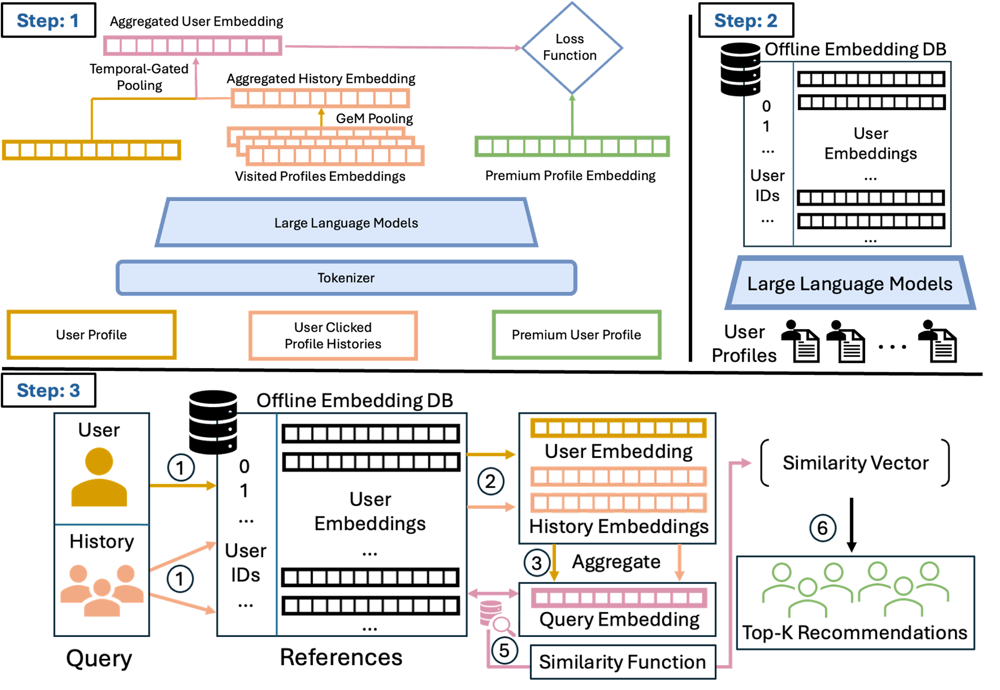
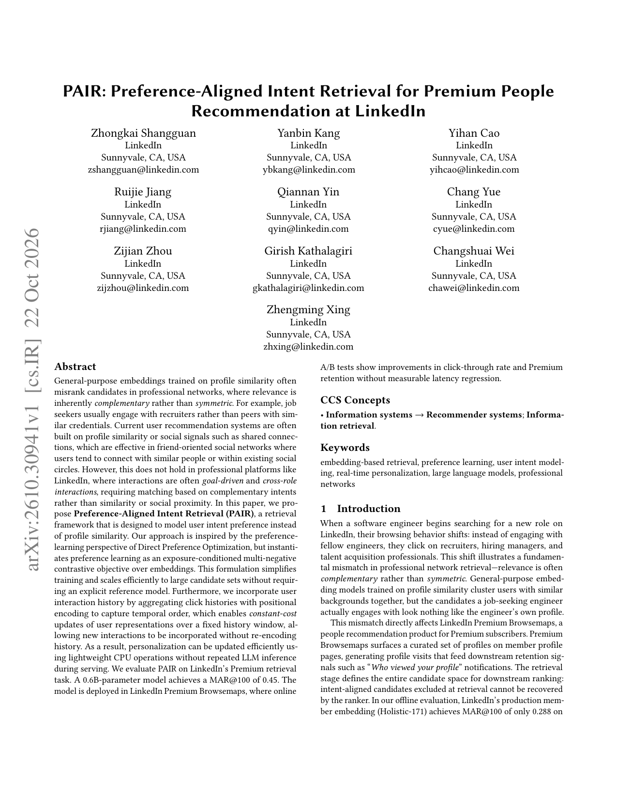

LinkedIn Premium「人脉浏览推荐」里，生产会员向量 Holistic-171 的 MAR@100 只有 0.288，开箱 0.6B LLM embedding 更低到 0.192——二者都在学「档案像不像」，而 Premium 场景里高价值互动常常是互补的：找工作的工程师要点的是招聘方，不是另一个工程师。PAIR 把生产曝光日志里的点击写成曝光条件偏好：点过的优于同曝光未点的，再加随机负例；0.6B 模型做到 MAR@100=0.450（相对 Holistic +56%，相对开箱 2.3×）。线上替换检索向量后 CTR +7.5%、Premium 留存 +2.1%，页加载延迟 +0.1%。任务专用的偏好监督比把通用会员向量做大更管用。
1. 问题：相似度召回对不上职业意图
Premium 用户会话更密、目标更强，意图还会周级切换（找工作 ↔ 被动社交）。静态档案向量抓不住「这周要点谁」。生产召回若按档案相似聚类，会把求职者推给求职者。作者把检索重写成偏好排序：查询用户 、正例 、负例 ，目标是在生产曝光分布的支撑集内学相对序，而不是在任意负例上做相似拉开。

2. 方法：曝光条件对比 + 三塔 + Matryoshka
训练正例来自 Premium Browsemaps 曝光会话中的点击；每个会话按 1:3 构造负例池——同曝光未点击作 hard negative，再加随机成员。初始标准对比学习能抬准度，但仍偏向相似档案；改成曝光条件偏好对比后，才把空间扳向互补意图。服务侧不能每次点击都重跑 LLM：三塔里档案与候选离线算好，历史侧只对窗口 内预计算向量做位置编码 + 注意力，更新代价 $O(Kd)$。Matryoshka 损失让同一模型在 200/256/512/1024 维前缀上都可用，按面延迟与存储截断，不必为每个面训一个模型。

3. 核心贡献：偏好微调是主增益，历史是加分
离线主表把增益拆开：两塔 PAIR（无历史）MAR@100 已到 0.436；加上 P-ATT 历史到 0.450。相对 Holistic 的大头来自偏好微调，而不是把维数从 171 拉到 1024——256 维 PAIR 仍有 MAR@100=0.432，高于 171 维生产向量。历史聚合里 P-ATT 略优于 GeM / mean / max，但差距小于「做不做偏好微调」。
4. 实验
| 模型 | ACC | MAR@25 | MAR@100 |
|---|---|---|---|
| Holistic-171 | 0.794 | 0.169 | 0.288 |
| 开箱 0.6B | 0.771 | 0.100 | 0.192 |
| PAIR 两塔 | 0.960 | 0.255 | 0.436 |
| PAIR + P-ATT | 0.967 | 0.265 | 0.450 |
Matryoshka：1024 维 MAR@100=0.450；512 维 0.444；200 维 0.421。线上 A/B：实验组 PAIR+P-ATT@1024，对照组 Holistic-171，下游排序器相同；CTR +7.5%，Premium 留存 +2.1%，页加载 +0.1%，覆盖 −0.2%。作者写明：离线 MAR 提升大，线上效应更小，因为排序器与产品层会吃掉一部分召回增益。
示意走查：求职工程师本周点过三位招聘经理；历史塔把这 K 条预计算向量做位置注意力，与本人档案向量相加后去 ANN。候选侧若仍是「另一位工程师」，偏好微调后的空间会把它压到曝光未点负例一侧，招聘经理则抬升。服务路径不重跑 0.6B——只做向量加权。
5. 局限
偏好只在历史曝光集内观测，继承选择偏差；作者提到可用探索采样缓解，但正文主结果仍基于日志。意图窗口 与温度等超参见附录，跨面迁移要重看截断维。A/B 只换检索向量，不声称端到端重做推荐。
6. 实践意义
一是职业/人脉类召回若正例是「互补角色」，先改训练信号再堆模型尺寸。二是要动态意图又不想在线跑 LLM，把历史做成预计算向量上的 $O(Kd)$ 聚合，并用 Matryoshka 一套模型伺候多个延迟预算。